Hearthfall
A god game on a planet the size of a tabletop. Lead a tribe from its Hearth, turn their prayers into power, and reshape the land under your rivals' feet. Mind the water.
Free, runs in a desktop browser with WebGL2. Mouse and keyboard.
Your people are your power
A Hearth, a Shaper, a tribe
Your Shaper is mortal: a single caster who walks the world with her followers. Settlers chop wood and raise huts, and every follower who prays at the Hearth or a shrine feeds the mana you spend on spells. More people means more power, so a growing village is your whole strategy.
The world is a small curved planet that wraps at every edge, lit like a tabletop miniature: golden afternoons, evening firelight, rain and night.
The land is a weapon
Spells that move the ground
Raise a land bridge across a strait, crack a village with a quake, call a volcano out of a meadow or a rain of fire down on an army. The terrain is fully deformable, and water kills: sink the ground under your enemies and the sea does the rest.
Eighteen spells in all, from a simple bolt to wraiths, wards, whirlwinds and floods.
They will come for your Hearth
Rivals with a plan
Train Wardens, Firecallers, Chanters and Shades in a counter triangle, build towers and boats and balloons, and hold the hill shrines. The opponent tribes play aggressive, sneaky or turtle, worship across the water and raid your prayers. This clip is an unscripted AI match: nobody is steering.
Four chapters
A campaign of 45 levels
The First Fires teach the basics. The Wide Waters take you across the sea. The Far Shores bring tides and causeways. The Wild Heart turns the land itself against you: wolf dens, storms, quakes and eruptions that warn you first, and a finale around a live volcano.
Every level is checked by a bot that wins it and an idle player who loses it, so none of them is impossible or free.
And the rest
Skirmish, Forge, editor, replays
Skirmish with victory variants, a Forge phase that lets every tribe shape the map before the match, a map editor, watchable replays, photo mode, records and achievements, LAN versus and co-op (the campaign too), a painted stone interface that scales from 720p to 1440p, and a colorblind palette.
The tour
78 seconds of the current build, captured by script on a virtual clock. Pick a chapter.
How it was made
Built by an AI, directed by a person
Hearthfall was written by Claude Code working on its own for days at a time. It started from a kickoff package (design intent, a roadmap of twelve milestones, testing rules, asset budgets). From there the agent made the build decisions and logged its reasons, with art-direction picks and playtests along the way.
The first run went from an empty folder to all twelve milestones in about 26 hours. The game kept growing for a week after that: look passes, the campaign, LAN play, a painted interface.
Deterministic to the bone
The simulation uses fixed ticks, seeded randomness and an allowlist of math, enforced by a guard on every check. That makes replays exact, lets a bot prove every level winnable, and keeps two computers in lockstep over a LAN.
Tested like a product
668 unit tests, scenario tests, 91 level scenarios, golden replays checked in Node and in Chromium, render benches and 13 sets of screenshot baselines. An AI vision check reads the screenshots for layout problems humans would notice.
Generated, then curated
Gemini painted concepts, icons, interface pieces and the key art. Meshy turned the concepts into low-poly 3D models. ElevenLabs made the sound effects, voices and music. Every model is normalized in Blender and snapped to one palette.
Data first
Units, buildings, spells, AI personalities and all 45 levels live in validated JSON, so new content is data and mods can change the game without code.
From first pixels to the Wild Heart
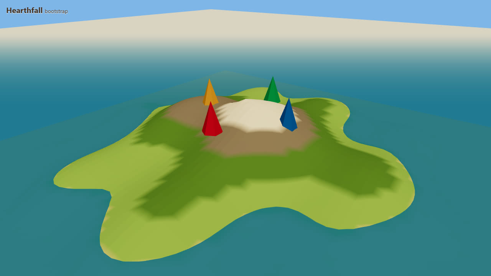
First pixels: proving the GPU renders headless, so every later change can be checked by screenshot.
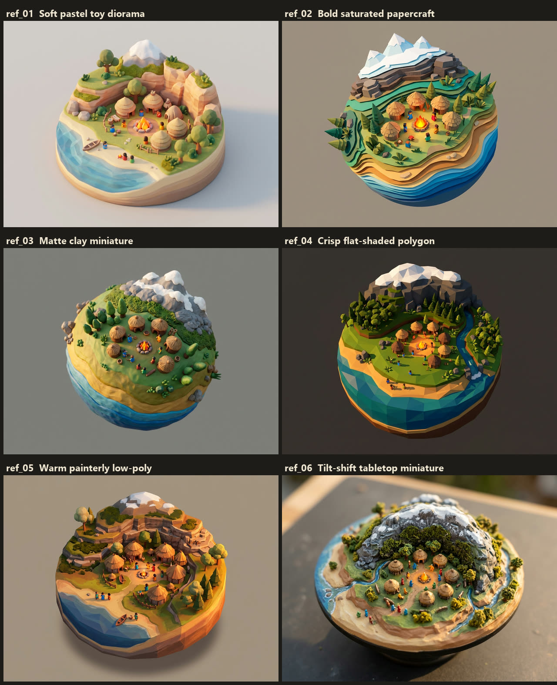
Six candidate art directions from Gemini. Crisp flat-shaded polygons won; the tilt-shift miniature came back on day two.
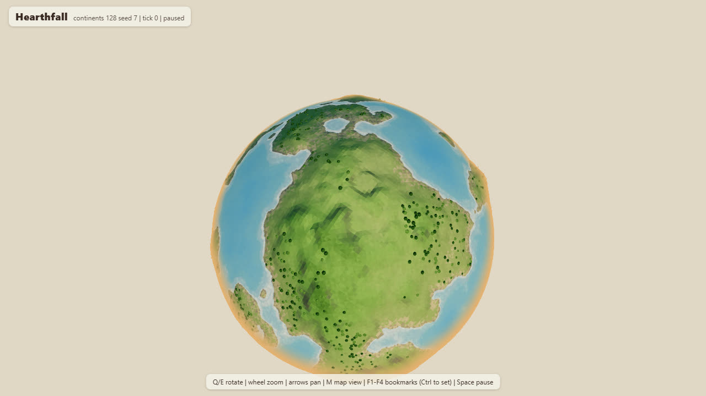
A world on a torus: a wrapping map bent by a shader into a small round planet.
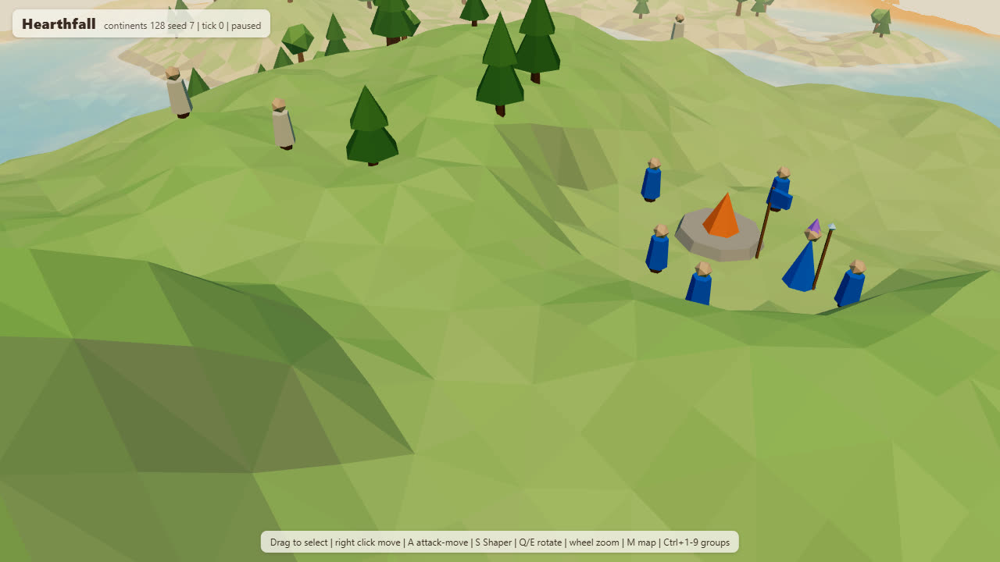
People appear: the Shaper and her first settlers pathing over ridges.
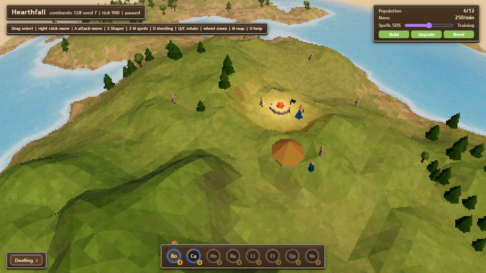
The first retro render pass: chunky pixels, a dithered palette and a firelit Hearth.
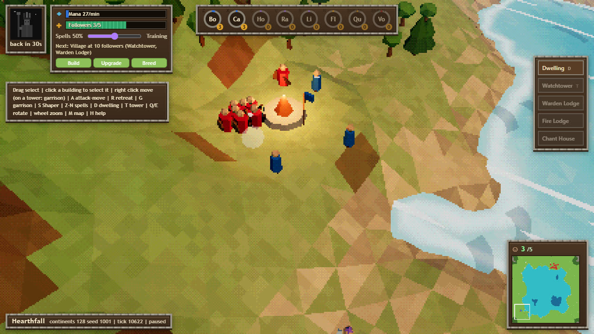
First raid: the aggressive AI's Wardens reach an idle player's Hearth at minute nine.
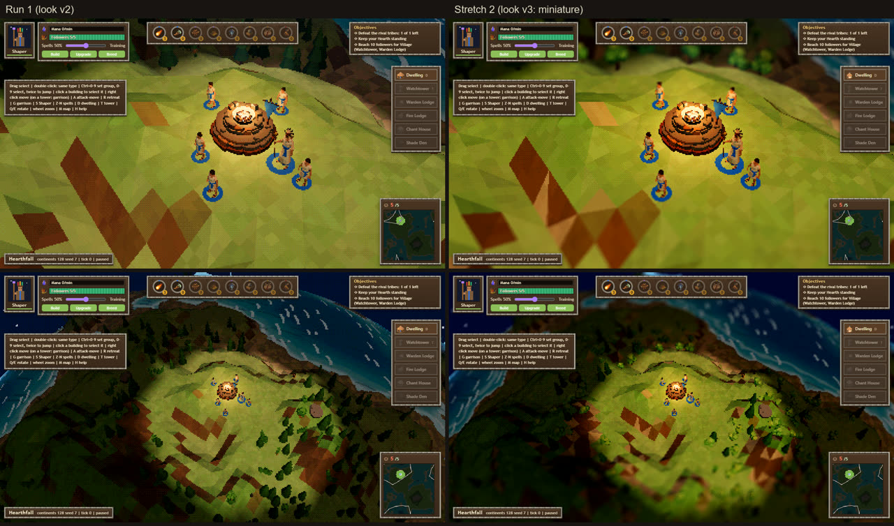
Look v3, the miniature: tilt-shift focus, painted water, thatched huts and lighting presets.
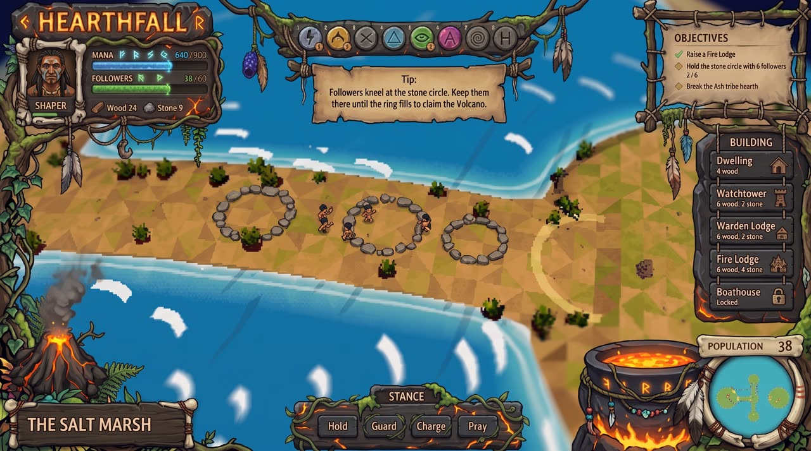
The plain interface gave way to this painted Gemini concept.
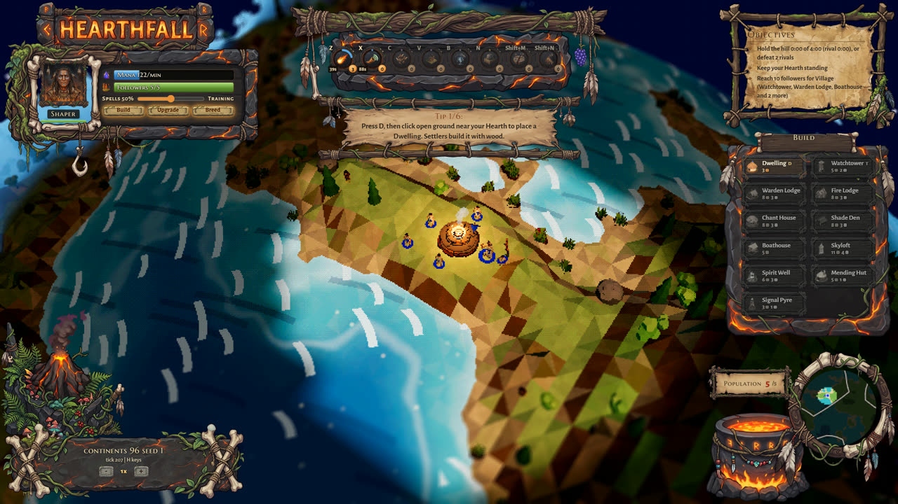
The same night: the Ember Grove HUD built from those painted pieces, fitted to any screen size.
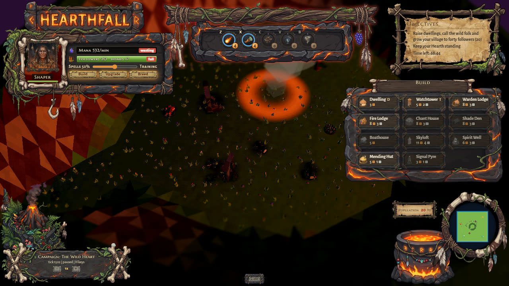
Chapter 4, The Wild Heart: the finale around a live volcano.
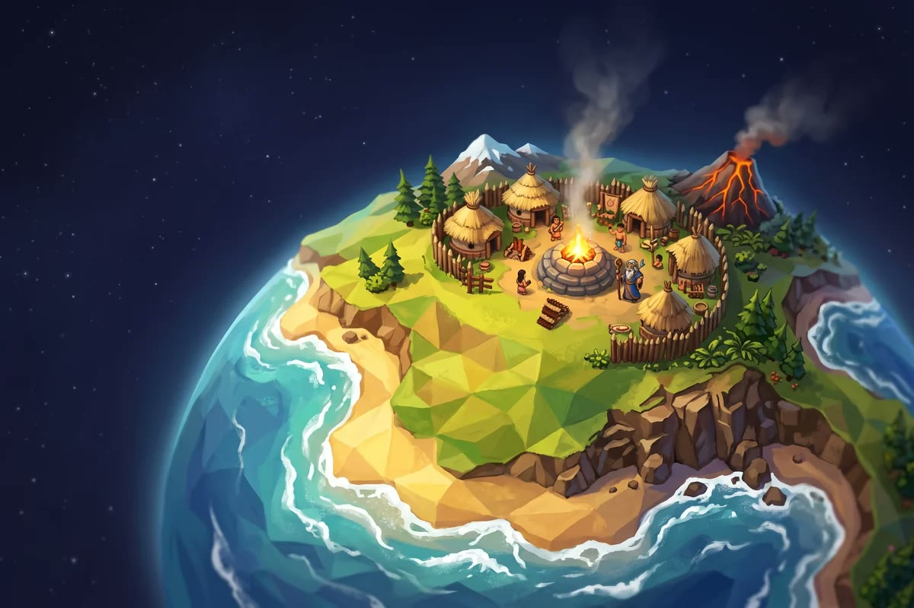
Light the Hearth
Hearthfall is playable now and still growing. Play it in your browser, or read the code, the design docs and the full development log on GitHub.